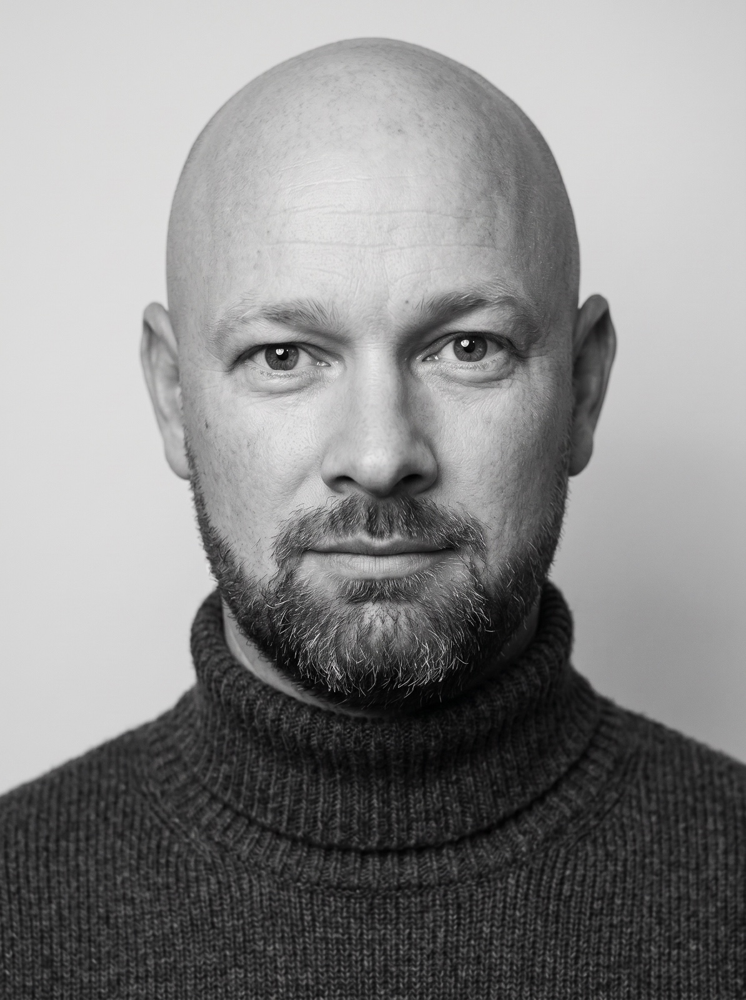
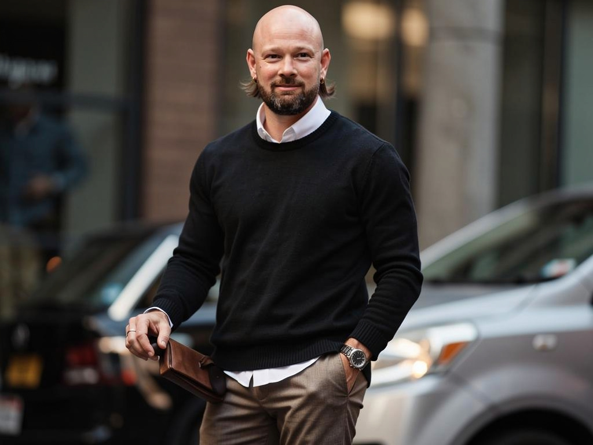

Florian, notre vidéaste au bureau, a sorti un outil qui génère des photos de produits pour les sites e-commerce · quelques centimes par photo au lieu d'un shooting photographe. Quand j'ai vu ça, je me suis dit · si ça marche pour les produits, pourquoi pas pour les visages ? J'ai construit l'équivalent pour le personal branding. Deux semaines de chantier plus tard, j'utilise mes photos sur LinkedIn et on a même fait un set complet pour un de nos collaborateurs à 0,80 €. Voici le récit · ce qui marche, ce qui foire honteusement, et le code source que je vends en précommande pour ceux qui veulent juste l'utiliser pour eux et leur équipe.
J'avais besoin de photos. Pas mille, juste 5 ou 6 belles photos de moi, utilisables sur LinkedIn, le site, en hero de newsletter, sur une page de vente. Tu connais le problème : la dernière vraie séance photo que tu as faite remonte à des années, tes selfies datent de 2022, et tout ce que tu publies sort un peu pâle.
Deux options classiques · payer un photographe (environ 500 € la séance à Lyon ou Paris pour un set correct), ou prendre un abonnement à un générateur tout-fait comme Klayn.ai (à peu près 200 €/mois). J'ai trouvé les deux trop chers pour un truc dont j'ai besoin une fois par trimestre.
Donc j'ai fait ce que je fais à chaque fois que je trouve un produit cher · j'ai regardé sous le capot. Klayn empile en réalité trois ou quatre modèles d'image IA disponibles sur des plateformes comme fal.ai. À l'unité, chaque photo coûte entre $0.04 et $0.20 · pas 200 € par mois. Le reste, c'est juste de l'interface, du marketing et de la marge.
J'ai construit mon outil. Voilà la photo dont je suis le plus content (générée à partir de 4 selfies pris à mon iPhone) :

Tu peux très bien remplacer la séance photo par un outil maison. Mais pas en 1 soir · il faut deux semaines pour caler les bons réglages. Si t'as pas envie de te taper la courbe d'apprentissage, je vends mon code en précommande à 99 € · tu lis l'article et tu choisis si tu veux le faire toi-même ou récupérer le mien.
Pour être honnête, l'idée vient pas de moi. C'est Florian, notre vidéaste-photographe au bureau, qui a tout démarré.
Il y a quelques mois, Florian a construit un outil qui génère des photos de produits pour les sites e-commerce. Le principe est tout simple · au lieu d'organiser un shooting (matos, studio, photographe, post-prod · facilement 1000 € pour quelques produits), tu uploades une photo de ton produit, tu décris la scène que tu veux ("notre crème en gros plan sur un comptoir en marbre noir, lumière dorée"), et l'IA te sort 5-10 photos pro de ton produit dans cette scène. Pour quelques centimes l'unité.
Quand j'ai vu ses premiers résultats sur des produits, j'ai eu un déclic · si ça marche pour les produits, pourquoi pas pour les visages ?
Parce qu'on a tous le même problème · une photo de profil LinkedIn qui date de 2022, pas de portrait pour la page "à propos" du site, rien d'utilisable en hero de newsletter, pas de visuel pour les pages de vente. Et entre la séance photo à 500 € et l'abonnement Klayn à 200 €/mois, il y a un trou que personne ne remplit. Surtout pour les équipes · si t'as 5 collaborateurs qui ont chacun besoin de 10 photos, ça te coûte un bras avec la voie classique (logistique d'un photographe au bureau, 1 journée bloquée, 2000-3000 € la facture finale).
Donc j'ai pris la même architecture que Florian, je l'ai forkée, et j'ai tout repensé pour les visages · gestion des références d'identité, prompts spécifiques pour qu'on reconnaisse vraiment la personne, mode "iPhone naturel" par défaut pour éviter le faux-magazine.
Deux semaines plus tard, j'avais mes photos. Et puis on s'est dit "tiens, on devrait essayer pour les autres dans la boîte" · t'en as un aperçu un peu plus bas dans l'article.
J'ai fait un site web tout simple. Quatre étapes, dans l'ordre :
Pas besoin de matos. Tu prends 4 selfies à la lumière du jour · face, profil gauche, profil droit, gros plan visage. C'est ce qu'on appelle des polas dans le jargon photo · les photos de référence pour que l'IA apprenne ta tête.
Comptes-y 2 minutes devant un mur clair.
Tu écris en français : "je veux une photo de moi en café cosy avec un MacBook" · ou "sur un rooftop au coucher du soleil avec mon téléphone". Si t'as pas d'idée, un bouton "Inspire-moi" te propose 8 décors prêts à l'emploi.
Sous le capot, Gemini 2.5 Pro (un modèle de Google) lit tes selfies et ton brief, puis te propose 5 plans différents · gros plan visage, plan poitrine, plan large décor, etc. Tu peux les modifier ou en virer un avant de lancer.
Le modèle d'image (par défaut Seedream 4.5, un modèle chinois ultra-bon pour faire plusieurs photos cohérentes d'un coup) fait son travail. 30-60 secondes plus tard, t'as tes 5 photos. Si y'en a une qui te plaît pas, tu cliques sur "regénérer ce plan" · ça en refait juste cette photo-là sans toucher aux autres.
Dans le tableau de bord, t'as aussi un compteur de coût en haut à droite · aujourd'hui $X.XX, ce mois-ci $Y.YY. Histoire de pas brûler 30 € sans t'en rendre compte (j'y reviens plus bas, c'est exactement ce qui m'est arrivé au début).
Je te montre deux résultats · ça donne une idée de ce qu'on obtient quand tout s'aligne.
Pourquoi celle-là marche · l'IA a gardé ma vraie tête (forme du crâne, structure de la barbe, regard), la lumière est douce et naturelle (pas de flash agressif), et le noir et blanc cache la peau parfois trop lisse de l'IA. C'est le genre de portrait que je peux mettre en photo de profil sans que personne ne pose de questions.
Pourquoi celle-là marche · le décor (rooftop coucher de soleil) reste plausible, je tiens le téléphone d'une manière naturelle, et la lumière dorée maquille les imperfections que l'IA met parfois sur la peau. Idéal en hero de page de vente ou de newsletter.
Chaque tirage Seedream 4.5 me coûte $0.04. Pour ces 2 photos j'en ai en réalité tiré une quinzaine (je garde celles qui me plaisent et je jette les autres). Total : environ $0.60. Une séance complète "tous les sets de l'année" me coûte 30 €.
C'est là que l'outil devient vraiment intéressant. Une fois calé pour ma tête, on a pu le réutiliser tel quel pour les têtes des autres dans la boîte.
Voici un portrait généré pour un de nos collaborateurs · 4 selfies envoyés en input, brief "studio neutre noir et blanc, regard direct caméra, costume sobre", quelques tirages plus tard on avait son set complet de photos pro :
Ce que ça change concrètement · si tu pilotes une équipe, tu n'as plus besoin de faire venir un photographe au bureau pour tout le monde (logistique infernale, prix qui grimpe vite · entre 1500 € et 3000 € pour 5-10 personnes selon la ville). Chaque personne envoie ses 4 selfies depuis chez elle, tu fais tourner l'outil 5 minutes, et tout le monde a son set. Une fois l'outil installé, le coût marginal d'un collaborateur supplémentaire tourne autour de 0,80-1 €.
C'est aussi le moment où l'argument "j'achète le code une fois plutôt que de m'abonner" prend tout son sens · sur 5-10 personnes à équiper, le ROI du logiciel est immédiat.
Je vais pas te vendre du rêve. Pour 1 photo qui marche, j'en jette 4. Voici 2 ratés caractéristiques · ça te donne une idée du genre de pièges à éviter.

Ce gars-là n'est pas moi. Je suis chauve, je porte pas de boucles d'oreilles, j'ai jamais eu cette coupe. Pourquoi ça arrive · quand le prompt est trop vague (genre "homme business sur un rooftop"), le modèle invente le personnage. Mes 4 selfies de référence pèsent moins fort que les milliers de photos LinkedIn corporate que le modèle a vues à l'entraînement.
Le fix qui a marché · forcer dans le prompt des ancres très précises sur l'identité · "chauve, barbe poivre et sel, structure du visage carré, yeux bleus". Et faire un mini-test de 1 photo avant le batch, pour voir si l'IA capte bien ma tête. Si elle me confond avec quelqu'un d'autre, j'ajuste avant de tirer 5 photos d'un coup.
Là c'est un peu plus subtil · ça me ressemble vaguement (forme du crâne OK), mais c'est devenu une photo de banque d'images. Pose figée, costume beige stock, sourire de catalogue, lumière de pub immobilier. Si je mets ça en photo LinkedIn, mon réseau va se demander si j'ai pivoté en consultant Big4.
Pourquoi ça arrive · les modèles d'image ont une voix par défaut. Quand tu leur donnes pas de consignes très précises, ils tirent vers ce qu'ils ont le plus vu pendant leur entraînement · des photos de magazine éditorial, des photos corporate, du Hawkesworth-Kinfolk pour l'extérieur. Et c'est jamais ce qu'on veut quand on cherche du naturel.
Le fix qui a marché · j'ai créé un mode "iPhone naturel" par défaut. Le prompt force des choses comme "objectif 24mm, lumière mixte ambiante, légèrement décadré, pas de grain de pellicule, pas de composition éditoriale". Bilan · les photos ressemblent enfin à ce qu'on prendrait avec un iPhone moderne, pas à une couverture de magazine.
Si tu envisages de faire ton propre outil (ou même juste d'utiliser un Klayn et compagnie), ces 5 leçons te feront gagner deux semaines.
C'est le truc le plus piégeant. Tu écris un prompt simple et neutre, le modèle te sort du Vogue. Pas parce que tu lui as demandé, mais parce que c'est ce qu'il a le plus vu pendant son entraînement.
Concrètement · si tu veux du naturel iPhone, tu dois l'imposer fort dans le prompt (et même bannir explicitement les mots comme "Kodak Portra", "cinematic", "editorial"). Si tu fais pas ça, t'auras toujours du faux-magazine et tu comprendras pas pourquoi.
Mon réflexe au début · ajouter du contexte. Plus de mots = plus de précision, non ? Non, l'inverse.
Les modèles d'image ont un nombre de mots optimal entre 30 et 100. Au-dessus, ils moyennent et oublient la moitié de tes consignes. J'ai compressé mes prompts de 470 mots à 165 mots · les résultats ont été immédiatement meilleurs.
Il existe une dizaine de modèles d'image accessibles via fal.ai. J'en utilise principalement 4 · Seedream 4.5 (le meilleur pour faire 5 photos cohérentes d'un coup), Nano Banana Pro (le meilleur pour une seule photo très ressemblante), FLUX 2 (bon pour les scènes d'extérieur très précises), GPT Image 2 (bon pour la fidélité d'identité quand t'as une seule photo de référence).
Aucun n'est meilleur que les autres dans l'absolu · ça dépend de ta tête et de ce que tu cherches. Le seul moyen de savoir, c'est de générer la même scène avec les 4 modèles sur tes selfies, et regarder. Compte $0.50 pour ce test, c'est rentable.
Ça m'est arrivé en deux jours, sans déconner. Au début j'avais branché un modèle qui prenait 5-10 minutes à tourner. L'interface me disait "failed" à chaque essai (parce que mon serveur avait un timeout à 60 secondes). Sauf que le modèle, lui, continuait son travail en arrière-plan · et me facturait quand même. Je re-cliquais, il facturait à nouveau. Bilan en 1h · 0 brûlés en silence.
Le fix qui a sauvé mon compte fal · à chaque fois qu'un modèle prend plus de 60 secondes, je passe en mode queue + poll (en français · l'interface envoie le job, reçoit un ticket, et vient demander toutes les 8 secondes "c'est fini ?"). Plus jamais de double facturation. Et j'ai mis un compteur de coût en haut de l'écran qui passe au rouge si je dépasse 0 par jour.
Au début j'ai voulu trop tuner mes prompts. À chaque mauvais résultat j'allais modifier 3 mots dans le prompt système. Au bout de 2 jours, j'avais touché à tout, et j'arrivais plus à savoir quel changement avait amélioré quoi.
Le truc qui marche, à la place · un simple système de feedback humain. Sous chaque photo générée, 3 boutons (👍 j'aime · 👎 j'aime pas · 🛑 raté). Plus 8 tags fixes pour préciser ("ne me ressemble pas", "peau plastique", "pose figée", etc.). En 1 semaine de votes, j'ai compris que mon problème principal c'était la pose, pas la lumière. Sans le feedback j'aurais passé 2 semaines à tuner la lumière.
Si t'es développeur ou que t'as Claude Code installé, tu peux complètement faire ça toi-même. Voici la stack minimale :
3 conseils non négociables si tu te lances :
J'ai écrit le récit technique complet (17 sections, tous les bugs résolus, toutes les décisions d'architecture) dans un document à part. Si tu veux le lire avant de te lancer, dis-moi en réponse à la newsletter · je l'envoie en privé à ceux qui le demandent.
Si t'as pas envie de te taper deux semaines de bricolage · ou si t'as une équipe à équiper et que les abonnements SaaS additionnés te font mal au crâne · je vends le code source. À acheter une seule fois, pas d'abonnement, pas de SaaS qui peut disparaître demain.
Le code source complet, livré en deux formats · invitation immédiate au repo GitHub privé (tu reçois les futures mises à jour) et ZIP téléchargeable (autonome, tu fais ce que tu veux avec).
Sont inclus · le code Next.js prêt à déployer (15 min sur Vercel gratuit), le récit technique STORYTELLING.md qui documente toutes les décisions et les bugs déjà résolus pour toi, et le fichier CLAUDE.md qui permet à Claude Code d'apporter des modifications proprement.
Livraison automatique en 2 minutes · tu paies sur Stripe, tu reçois immédiatement par email le lien ZIP + l'invitation GitHub. Aucune attente, aucune validation manuelle.
Pas de limite par utilisateur · une fois installé, tu génères pour toi, tes collaborateurs, ton équipe, ton pote qui t'a demandé un service. Tu paies juste les coûts variables (les clés API ci-dessous).
Ce que tu apportes · ta propre clé fal.ai (environ 20 € pour 100 photos) et ta clé OpenRouter (environ 1 € pour 50 sessions). Pas d'abonnement caché · tu paies les modèles d'image à l'usage, directement, à quelques centimes la photo.
Garantie remboursement · si tu déploies l'outil et que ça ne marche pas chez toi en moins d'1h, je te rembourse intégralement, sans question.
Le tarif 99 € TTC est une offre de lancement limitée à 30 jours. À partir du 6 juin 2026, le prix passe à 149 € TTC (le tarif normal pour ce genre de produit).
Si tu hésites, ne traîne pas trop · ça fait 50 € d'économie pour ceux qui décident maintenant.
Pour acheter, direction la page :
Acheter à 99 € TTC · offre limitée →
Tu peux aussi écrire directement à jeremy.sagnier@eurofiscalis.com si tu préfères payer autrement (virement, etc.).
Quelques liens si tu veux creuser le sujet :
Si t'as fait ton propre générateur de photos personal branding ou que t'as testé Klayn, réponds à la newsletter et raconte-moi ce que t'as appris. C'est comme ça que mes prochains articles s'améliorent.
Chaque fois que je publie un nouveau tuto Claude Code / IA, je l'envoie dans ma newsletter AI Playbook. Si tu ne veux pas manquer le prochain, laisse-moi ton email sur la home.
Voir les newsletters →